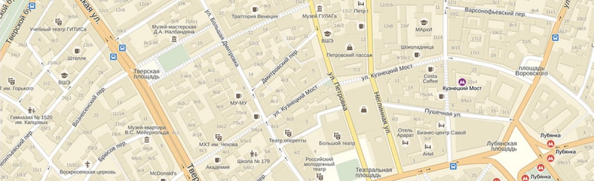

Контакты
Крестьянское (фермерское) хозяйство: ГКФХ Зубарева Наталья Владимировна
схема проезда
ОСТАЛИСЬ ВОПРОСЫ ИЛИ ПРЕДЛОЖЕНИЯ?
Если у вас остались вопросы или у вас есть предложения. то вы можете заполнить форму обратной ссвязи ниже и мы обязательно вам ответим